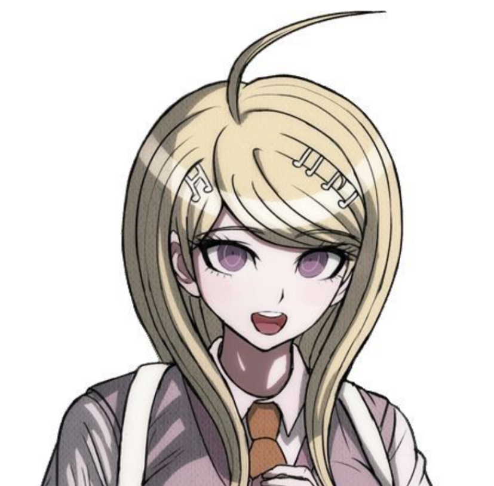
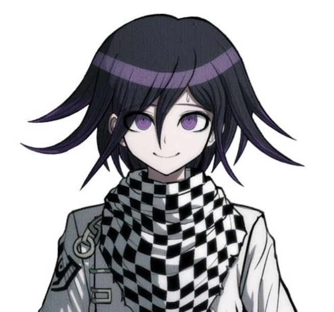
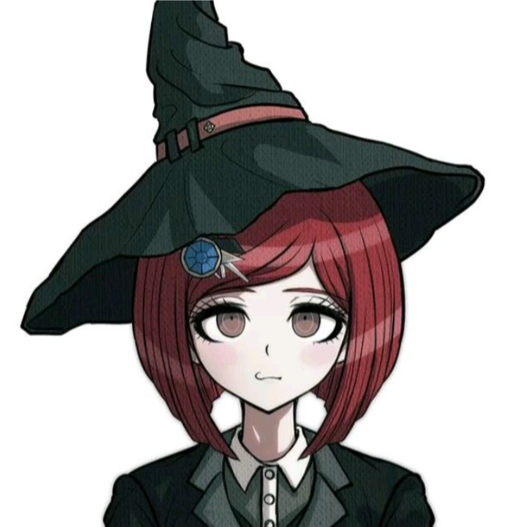
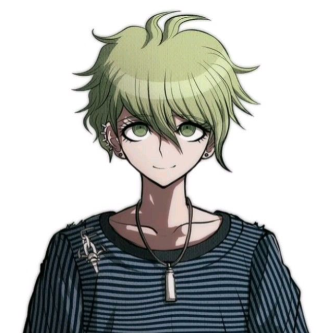
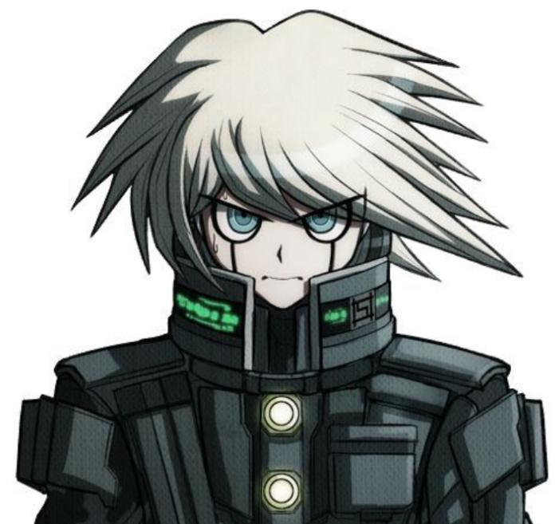
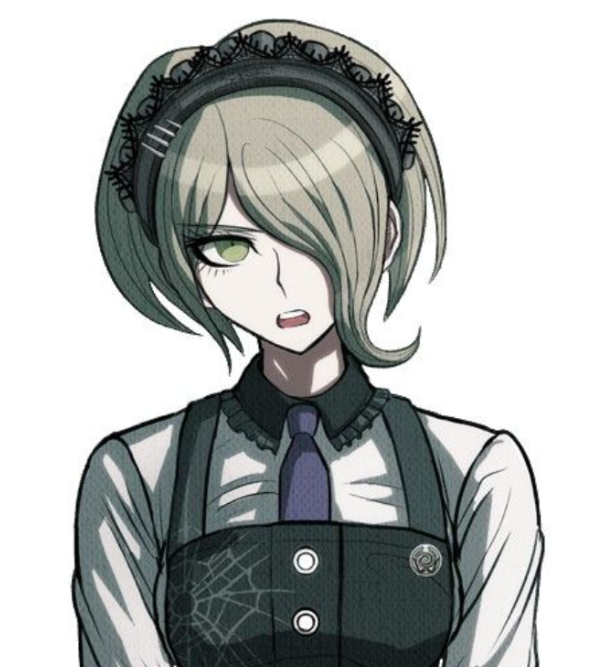
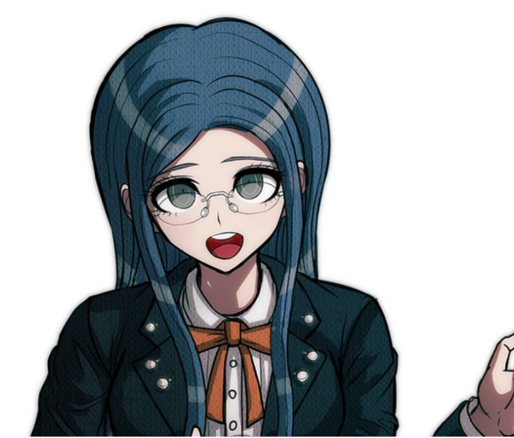
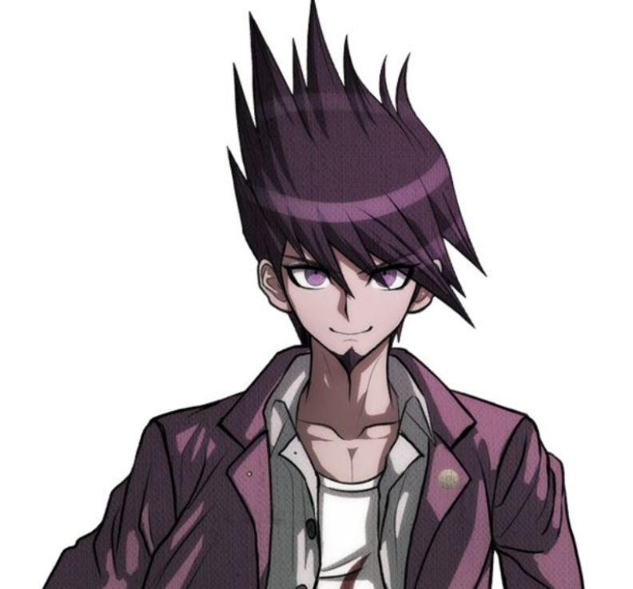

Danganronpa V3: Killing Harmony es un videojuego de misterio y novela visual en el que 16 estudiantes con talentos especiales son encerrados en una academia y obligados por el oso robótico Monokuma a participar en un “juego de asesinatos”, donde deben matar y descubrir al culpable en juicios llenos de engaños y lógica. Con una trama llena de giros, humor negro y crítica meta-narrativa, el juego combina investigación, debates y drama psicológico para cuestionar la verdad, la ficción y las propias reglas de su universo.
Shuichi Saihara. Edad: 17. Altura: 175 cm. Peso: 62kg. Título: Ultimate Detective. Personalidad: Tímido, lógico y empático. Al principio duda de sí mismo, pero con el tiempo demuestra gran inteligencia, empatía y determinación para descubrir la verdad.
Kaede Akamatsu. Edad: 17. Altura: 166 cm. Peso: 59kg. Título: Ultimate Pianist.Personalidad: Alegre, valiente y solidaria. Cree firmemente en el poder de la esperanza y siempre intenta motivar a los demás. Es una líder natural y confía en que todos pueden superar cualquier desafío si trabajan juntos.
Miu Iruma. Edad: 17. Altura: 173 cm. Peso: 56kg. Título: Ultimate Inventor. Personalidad: Excéntrica, arrogante pero sensible. Es brillante en el campo de la invención y suele usar un lenguaje vulgar para ocultar su vulnerabilidad.
Kokichi Ouma. Edad: 17. Altura: 156 cm. Peso: 44kg. Título: Ultimate Supreme Leader. Personalidad: Burlón, enigmático y carismático. Aunque parece mentiroso y caótico, a veces sus acciones esconden buenas intenciones o una verdad más profunda. Su personalidad impredecible lo hace difícil de comprender.
Angie Yonaga. Edad: 19. Altura: 157 cm. Peso: 46kg. Título: Ultimate Artist. Personalidad: Alegre, devota y carismática. Es una chica alegre, creativa y profundamente espiritual. Tiene una fe inquebrantable en su dios, actúa, y suele interpretar todo lo que ocurre como parte de su voluntad. A pesar de su dulzura, su devoción puede volverla algo inquietante para los demás.
Himiko Yumeno. Edad: 16. Altura: 150cm. Peso: 40kg. Título: Ultimate Magician. Personalidad: Perezosa, reservada pero bondadosa. Se autodenomina maga, aunque sus “trucos” son en realidad ilusiones. A lo largo del juego, pasa de ser perezosa y distante a mostrar más emociones y determinación.
Maki Harukawa. Edad: 17. Altura: 162 cm. Peso: 48kg. Título: Ultimate Child Caregiver. Personalidad: Fría, reservada y protectora. Aunque parece distante, es muy protectora y leal con quienes le importan. Es una talentosa asesina a sueldo, pero también demuestra tener un corazón amable y sensible.
Rantaro Amami. Edad: 18. Altura: 180 cm. Peso: 68 kg. Título: Ultimate Survivor. Personalidad: Calmado, misterioso y observador. Siempre parece tranquilo y despreocupado, con una actitud relajada que oculta su verdadera inteligencia y habilidades. Su misteriosa personalidad lo hace difícil de leer, y suele mantener la calma incluso en situaciones tensas.
Gonta Gokuhara. Edad: 17. Altura: 198 cm. Peso: 98 kg. Título: Ultimate Entomologis. Personalidad: Amable, protector e ingenuo. Es un joven amable, bondadoso y de gran corazón, siempre dispuesto a ayudar a los demás. Aunque su tamaño y fuerza pueden intimidar, es muy inocente y se preocupa profundamente por la seguridad de sus amigos.
K1-B0. Edad: 17 (aparente). Altura: 185 cm. Peso: 80 kg. Título: Ultimate Robot. Personalidad: Optimista, educado y protector. Es un robot optimista, educado y con un gran sentido de la justicia. Siempre trata de ser útil y amigable con todos, aunque a veces malinterpreta situaciones debido a su naturaleza literal y mecánica.
Korekiyo Shinguji. Edad: 19. Altura: 175 cm. Peso: 60 kg. Título: Ultimate Anthropologist. Personalidad: Tranquilo, misterioso y curioso. Es un joven tranquilo, educado y algo inquietante, con una gran fascinación por las culturas y tradiciones antiguas. Su comportamiento puede parecer extraño o perturbador, pero refleja su interés profundo por la historia y el estudio del ser humano.
Kirumi Tojo. Edad: 18. Altura: 170 cm. Peso: 53 kg. Título: Ultimate Maid. Personalidad: Responsable, disciplinada y servicial. Es una chica seria, confiable y profesional, siempre dispuesta a cuidar y servir a los demás. Su sentido del deber y disciplina la convierten en alguien eficiente, aunque a veces puede parecer demasiado estricta.
Tenko Chabashira. Edad: 16. Altura: 156 cm. Peso: 49 kg. Título: Ultimate Aikido. Personalidad: Enérgica, impulsiva y leal. Es una chica enérgica, impulsiva y muy apasionada por la justicia. Tiene un fuerte temperamento y no duda en defender a quienes considera inocentes, aunque a veces actúa sin pensar. Su lealtad y determinación son características destacadas.
Tsumugi Shirogane. Edad: 17. Altura: 165 cm. Peso: 48 kg. Título: Ultimate Cosplayer. Personalidad: Tímida, creativa y amable. Es una chica tímida, dulce y amable, apasionada por la moda y el cosplay. Suele mostrarse reservada, pero tiene un gran talento creativo y se interesa profundamente por el diseño y la interpretación de personajes.
Ryoma Hoshi. Edad: 18. Altura: 105 cm. Peso: 70 kg. Título: Ultimate Tennis Pro. Personalidad: Serio, frío y decidido. Es un joven serio, frío y directo, con un fuerte sentido de la justicia y la disciplina. Aunque puede parecer arrogante o brusco, se preocupa por la verdad y la seguridad de quienes le rodean.
Kaito momota. Altura: 184 cm. Peso: 74 kg. Título: Ultimate Astronauta. Es un joven extrovertido, enérgico y optimista, siempre intentando motivar y proteger a sus compañeros. Tiene un gran sentido del heroísmo y le encanta ser el centro de atención, aunque también muestra un lado sensible y leal.